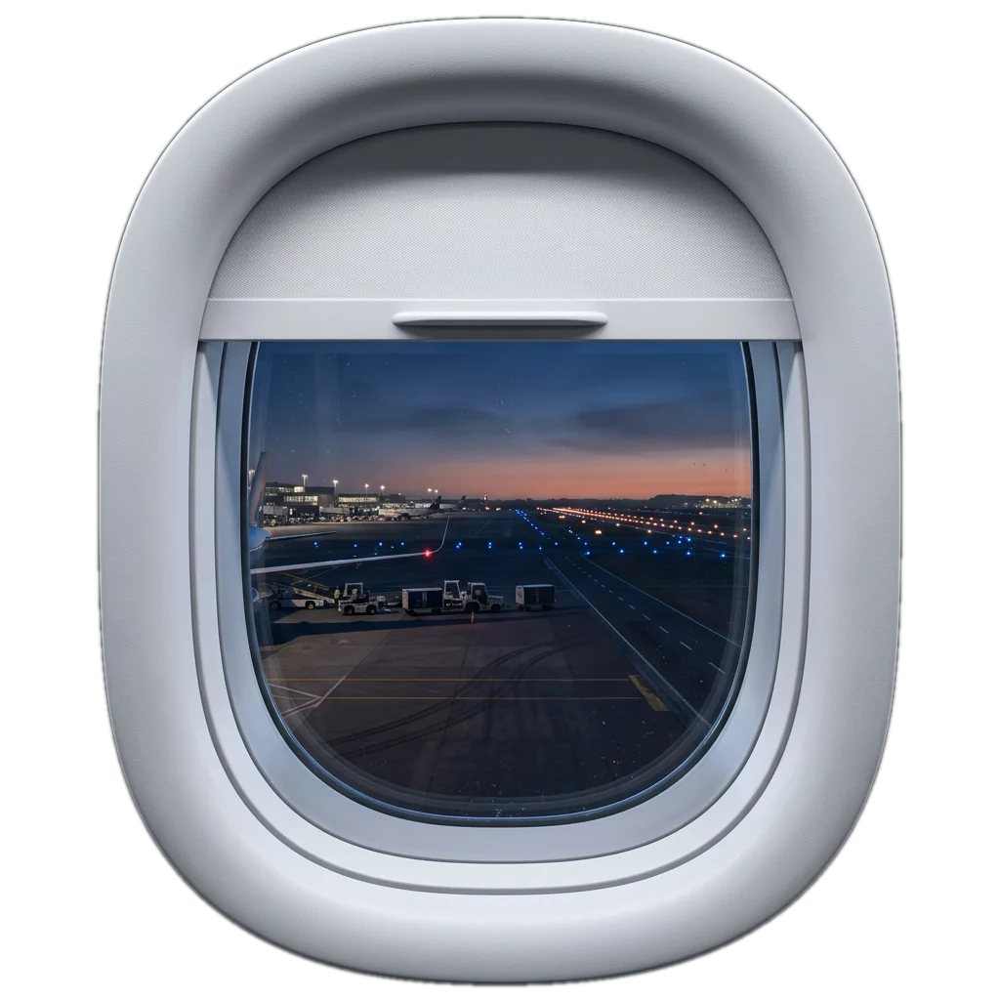

Aisle
London

Seat 1A,
by the window
A virtual Concorde flight from London Heathrow to New York JFK. About 3.5 hours. Scroll to open your window shade.
Scroll down
To open the shade
Why so small?
60,000 ft
Concorde's windows were tiny because of the pressure difference at about 60,000 ft.
Seats
Window
Ceiling
Speed display
Flight deck
Walk inside · Concorde G-BOAAAisle
Drag to look around · Click the rings · Arrows or wheel to walk
Cabin tour
A short walk through the cabin before take-off. Scroll to move down the aisle.
Cabin tour1 / 5
Four across
Two seats, the aisle, two seats. Room for about 100 passengers, and every seat is next to a window or the aisle.
Cabin tour2 / 5
Small for a reason
The windows are tiny because of the pressure difference at about 60,000 ft.
Cabin tour3 / 5
Built narrow
The cabin is narrow and the ceiling is low. The whole aircraft is shaped to slip through the air at Mach 2.
Cabin tour4 / 5
Your speed on the wall
A display at the front shows the speed in Mach. On this flight it will pass 2.00.
Cabin tour5 / 5
Three crew up front
Captain, first officer and flight engineer. The engineer faces a whole wall of dials on the right.
Take-off
Take-off position
Before take-off the long nose is lowered 5 degrees, so the pilots can see past it.
Nose angle0.0°
0°Nose up5°Take-off12.5°Landing
Mach
0.95
Reheat on. Past Mach 0.95 and through the sound barrier. Breaking it makes a sonic boom, so Concorde flew supersonic only over water.
Twice the speed of sound, on a delta wing built for it.
ConcordeCruise
- Speed
- Mach 2
- Altitude
- about 60,000 ft
- Nose temperature
- about 127°C
- London to New York
- about 3.5 h
Cruise altitude
60,000 ft
High enough to see the curve of the Earth.
Nose temperature
127°C
At Mach 2 the airframe gets hot. The nose reaches about 127°C and the plane stretches by some centimetres.
+ some cm
Boarding pass
3.5 h
London to New York
LHR→JFK
About 3.5 hours instead of 7 or more. Seat 1A.
Approach
Descending into New York. For landing the nose drops again, now 12.5 degrees.
Concordeabout 3.5 h
Subsonic7 h or more
24.10.2003
For 27 years you could cross the Atlantic in about 3.5 hours. Then it stopped, and the trip went back to 7 hours or more.
Would you give up comfort, money or quiet skies to fly this fast again?
Concorde: A Transatlantic JourneyHuman Centered Design student project3D model: "Concorde" by manilov.ap on Sketchfab, CC Attribution, nose split for this siteSky, asphalt and grass: Poly Haven (CC0)Cabin and flight deck photos of Concorde G-BOAA: BenTanXiaoMing (CC BY-SA 4.0) and Alan Wilson (CC BY-SA 2.0), Wikimedia Commons; depth added for this site, shared under the same licencesEarth footage: NASA, International Space Station, Expedition 67/68 (public domain)
Images are AI-generated illustrations, not photographs of the real aircraft